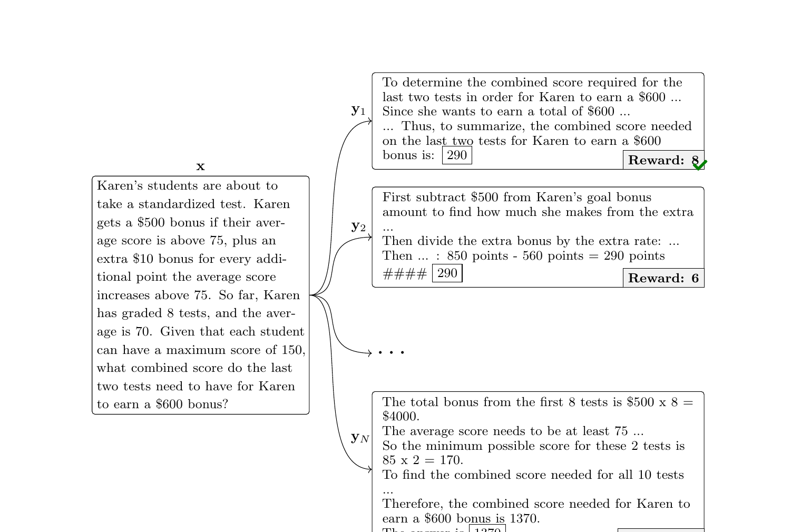
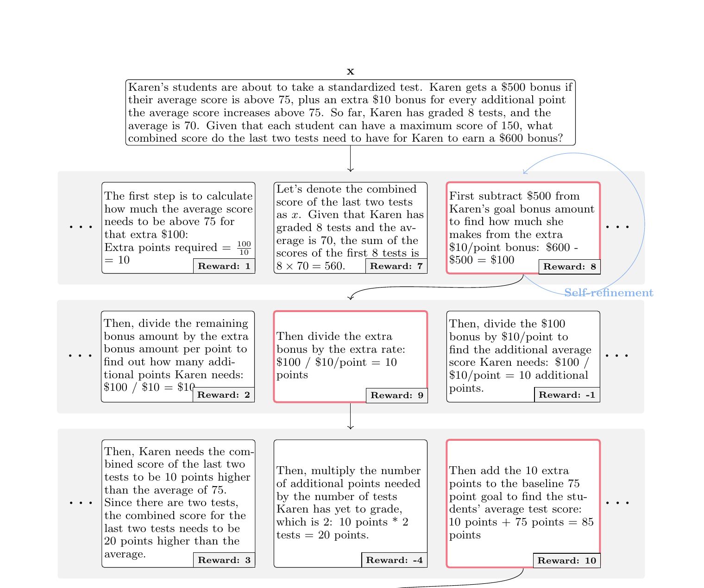
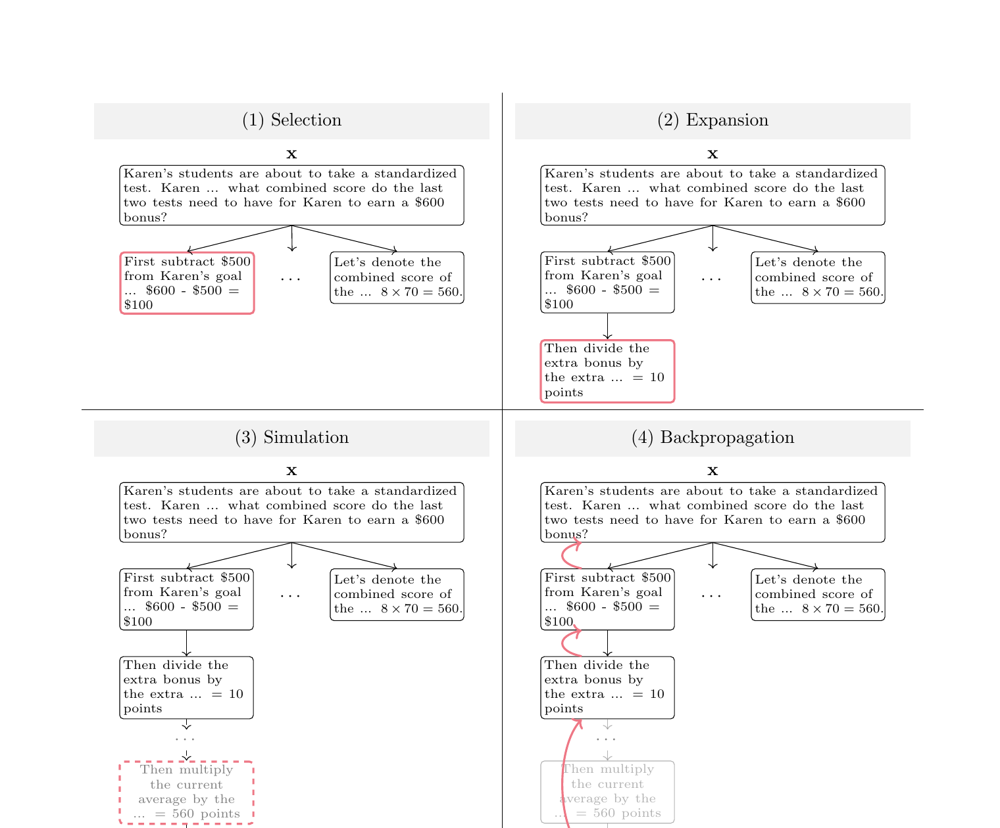
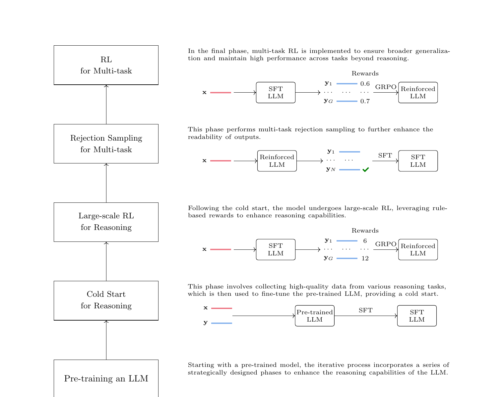
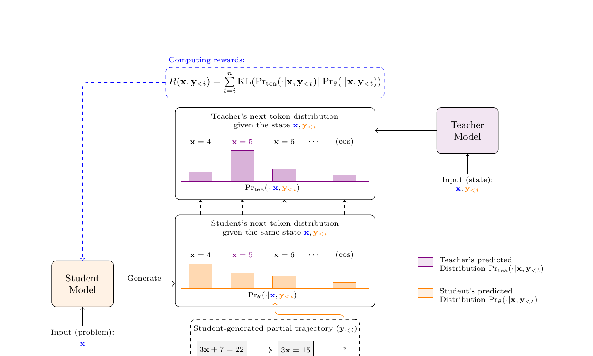

RL for LLM Reasoning
到目前为止，我们主要讨论了用强化学习训练 LLM 的各个环节及其应用与改进。这些方法很容易推广到一大类场景——只要输出的正确性可以通过 “是否包含期望结果”来检验。例如在计算数学表达式时，答案正确就给正反馈、错误就给负反馈。然而在许多需要复杂推理的问题上， 只看最终答案对学习是不够的。想象一个学生只拿到一道有难度数学题的最终答案是对是错：知道对错并不能帮助他弄明白自己错在哪一步、 正确的答案又该如何推出。更好的做法是带着学生一步一步拆解问题，引导他理解背后的概念、说出每一步背后的逻辑。为此，研究者们也在探索 用强化学习教 LLM 不仅给出正确答案，更发展并呈现符合人类认知过程、连贯且一步一步的推理。就此而言， 强化学习此前已被证明能有效训练神经网络在游戏环境内做复杂规划与推理，AlphaGo（Silver et al., 2016）与 AlphaStar （Vinyals et al., 2019）等著名成果就是例证。鉴于这些进展、以及问题求解本身固有的交互性，把强化学习应用于 LLM 推理是水到渠成的事。
本章进一步深入探讨用强化学习增强 LLM 推理能力这一近期广受关注的主题。我们先概述能充分释放 LLM 推理潜力的测试时扩展（test-time scaling）， 包括 Best-of-\(N\) 采样、逐步验证与蒙特卡洛树搜索；随后讨论两个关键问题：如何有效地扩展强化学习、如何迭代强化学习过程以增强推理能力。 需要说明：下文方法主要以数学推理任务来说明，但它们适用于广泛的决策问题。
我们先回顾强化学习的根本目标：最大化输出生成过程中获得的奖励。这一目标过去主要靠训练时优化技术（如策略梯度或 PPO）达成。 训练之外，近期研究揭示了在测试时扩展计算的好处——这一过程称为测试时扩展（test-time scaling），能显著增强奖励最大化， 尤其在推理任务上。实践中，实现测试时扩展的一种简单做法是提示技术：例如在输入后追加“让我们逐步思考”（Let's think step-by-step）， 就能有效促使 LLM 在生成中展开更详细的推理。这种做法虽能提升推理准确率，却常常只带来次优表现：模型并非天生就理解最有利的推理过程。 为解决这个问题，可以引入奖励模型的引导来做测试时扩展，见下文各小节。

用奖励模型做测试时扩展的一条路线是：给定输入采样多条推理路径，然后从 LLM 生成的 \(N\) 个候选输出中，用奖励模型选出最佳的一个， 称为 best-of-\(N\) 采样（BoN 采样）。可以把 BoN 采样看作一种重排序技术。事实上，重排序在 NLP 中早已是常用技术， 尤其在机器翻译中：长期以来用它从一组候选中挑选最合适的译文来提升输出质量。另外，这种方法也常充当简单的模型集成手段： 此时，不同模型生成的输出按指定指标重排序。
如图 22 所示，在 BoN 采样中，我们先为输入 \(\mathbf{x}\) 采样 \(N\) 个不同输出 \(\{\mathbf{y}_1,\mathbf{y}_2,\cdots,\mathbf{y}_N\}\)：
输出的采样方式可以多样，取决于模型采用的解码算法（如核采样或束搜索）。得到 \(N\) 个候选后，用奖励模型评估并选出最佳输出：
这一过程不仅找出奖励最高的输出，也直接评估了奖励模型本身的有效性。例如，可以考察奖励模型的选择 \(\mathbf{y}_{\mathrm{best}}\) 与人类选出的最佳输出是否一致，来评估两者的一致程度。考虑到相比 PPO 等更复杂的评估方法（Rafailov et al., 2023; Gao et al., 2023）， 这种方式又快又省，它被广泛用于评估奖励模型的性能。不过在没有奖励模型的场景，也可以用多数投票决定推理任务的最终输出： 基本步骤是先找出多数推理路径收敛于哪个答案，再把得出该答案的任一输出当作最终输出。
值得注意：BoN 采样的结果也受 \(N\)-best 列表多样性的影响——这是多数重排序方法的通病。通常我们希望 \(N\)-best 候选质量都比较高， 但彼此又足够不同。在很多文本生成系统中，\(N\)-best 输出非常相似，往往只有一两个词不同。在 LLM 中多样性问题更具挑战： 采样出的 \(N\)-best 输出在措辞上可能不同，语义却常常十分接近。实践中可以调节模型超参数，或采用不同的 LLM 来生成更多样的重排序候选。 但和许多实际系统一样，这需要在“选高质量候选”与“保证输出足够多样”之间做权衡。
BoN 采样也可用来训练 LLM。与之密切相关的是拒绝采样（rejection sampling）：先用奖励模型从 \(N\)-best 列表中挑出“最佳”输出， 再用这些输出微调 LLM。这样就能以远比 PPO 简单的途径，把人类偏好引入 LLM 训练。已有许多 LLM 采用拒绝采样做微调 （Nakano et al., 2021; Touvron et al., 2023）。
BoN 采样虽然能有效扩展测试时计算，但效率不高：模型必须先生成整条推理路径才能评估其质量。针对这一低效，一条路线是逐步验证 （step-by-step verification）：在生成推理路径的同时评估每一步的质量9。这样能尽早判断一条路径在中间步骤上的潜力， 并通过放弃没前途的路径进一步削减计算资源。注意在这种做法下，为整条输出设计的传统奖励模型并不够用； 我们需要开发过程奖励模型（process reward model），用推理路径中的每一步来做评估。
9 通常我们从多个维度评估每个推理步骤。首要考虑的是是否存在错误：判断该中间步骤是否含不准确之处。 此外，还要评估该步骤带来的优势（advantage conferred by the step），考察这一步能否为后续步骤创造更优结果的可能（Setlur et al., 2025）。
可以针对现有数据集中的问题收集或生成推理路径，用来训练过程奖励模型：请人类专家标注路径中每一步的正确性。 这些标注既能直接用于训练 LLM，也能作为奖励用于奖励建模。不过实践中常用更丰富的标注（Lightman et al., 2024b）： 除了“正确 / 错误”标签，一步还可标为“中性”（neutral）：该步在技术上或许没错，但在整体推理过程中可能仍有问题。 另外也可以用自动的过程标注框架：它基于当前步骤生成多条完整推理路径，以这些路径的准确率充当该步质量的标注 （Wang et al., 2024d）。
得到一组带步骤级标注的推理路径及对应输入后，就可以训练一个奖励模型，为推理过程的每一步提供奖励。该奖励模型可当作分类模型， 因此其架构可以是在 LLM 之上叠加 Softmax 层，类似于图 10 所示的架构。这里考虑一条包含 \(n_s\) 步的推理路径，表示为 \(\bar{\mathbf{y}}=\{\bar{\mathbf{y}}_1,\cdots,\bar{\mathbf{y}}_{n_s}\}\)。在第 \(k\) 步，过程奖励模型同时接收问题描述 （记作 \(\mathbf{x}\)）与此前已生成的推理步骤（记作 \(\bar{\mathbf{y}}_{\leq k}\)），输出标签集合 \(\{\mathit{correct},\mathit{incorrect}\}\) 或 \(\{\mathit{correct},\mathit{incorrect},\mathit{neutral}\}\) 上的概率分布， 以评估该步的推理。该模型可用标准分类损失（如交叉熵）训练。训练完成后，就能通过评估每一步的正确性来评估整条推理路径。 一种简单做法是用分类对数概率定义每个推理步骤的奖励。例如第 \(k\) 个推理步骤的奖励可写成：
其中 \(\mathrm{Pr}_{\phi}(\mathit{correct}\mid\mathbf{x},\bar{\mathbf{y}}_{\leq k})\) 是奖励模型生成 “correct” 标签的概率。 有了奖励分数 \(R_{\phi}(\mathbf{x},\bar{\mathbf{y}})\)，就能在生成推理路径的过程中用它选出最佳步骤。此外，如 4.1.4 节讨论的， 还可以训练生成式过程奖励模型——文献中也称生成式验证器（generative verifier），进一步提升推理步骤的评估（Zhang et al., 2025a）。 注意在实践中，过程奖励模型的作用不限于为测试时扩展提供奖励，还可用于以强化学习训练模型：例如它的奖励可作为塑形奖励使用。
如图 23 所示，逐步验证可以用一个简单的贪心搜索进行。具体地，每一步采样多个候选推理步骤，由过程奖励模型选出最好的一个； 被选中的步骤再作为基础生成下一步，如此反复，直到得到完整的推理路径。这样一来，任何方法都可以用于改进测试时扩展： 例如可以用束搜索扩展搜索空间、在每一步保留多个有潜力的推理步骤；还可以借助“自我精炼”（self-refinement）技术， 在每一步用验证反馈等信号作奖励对推理步骤做细化，从而扩展准确率（Yao et al., 2023a）。
本小节讨论蒙特卡洛树搜索（Monte Carlo Tree Search，MCTS）在逐步验证中的应用。这是一种流行的搜索方法。实践中，MCTS 并非新方法， 而是在众多领域已被充分确立。值得注意的是，它通常能有效替代传统强化学习方法，尤其适用于状态空间庞大或复杂的场景—— 这类场景中传统强化学习算法容易失能。例如在强化学习框架内，MCTS 可通过模拟多样化动作来辅助规划、以最大化奖励， 其在复杂博弈环境中的成功就是明证（Silver et al., 2016）。在 LLM 推理中，MCTS 利用随机性与结构化的树搜索来探查潜在推理路径， 以更高效的方式扩展搜索空间。更具体地说，如图 24 所示，MCTS 反复循环以下四个阶段来探索潜在推理路径：
选择（Selection）。 该过程从根节点（即输入）开始，算法依据特定的子节点（即推理步骤）选择策略，如置信上界 （Upper Confidence Bound，UCT）10，从当前节点选出有潜力的子节点。更具体地，在第 \(k\) 步，从采样出的候选推理步骤中， 我们要选出使 UCT 目标最大的那一个：
其中 \(N_p\) 是父节点被访问的总次数，\(N_{\bar{\mathbf{y}}_k}\) 是子节点 \(\bar{\mathbf{y}}_k\) 被访问的次数， \(c\) 是平衡“利用已知好路径”与“探索新路径”的常数；\(\hat{R}(\cdot)\) 表示某推理步骤的奖励：可以是过程奖励模型给出的静态奖励， 也可以是基于模拟得到的延迟奖励、持续更新的动态奖励。
10 当 MCTS 使用置信上界策略做节点选择时，所得算法通常称为“应用于树的置信上界”（Upper Confidence bounds applied to Trees，UCT）。

扩展（Expansion）。 当遇到叶子节点（即基于此前所选步骤新生成的推理步骤）、且它不代表推理过程的终止状态时，算法通过新增子节点来扩展该节点。
模拟（Simulation）。 对扩展阶段新增的每个节点执行过程模拟（或 rollout）。这些模拟路径有助于评估从该节点出发的推理步骤是否有效。 例如，可以把模拟得到的最终答案与正确答案比对，从而导出延迟奖励。
回传（Backpropagation）。 该过程利用模拟结果为之前的节点更新 UCT 值。关键更新包括式 (65) 中的访问计数 \(N_p\) 与 \(N_{\bar{\mathbf{y}}_k}\)， 它们反映各节点被探索的频率。此外，这一阶段还能纳入延迟奖励，用于调整 \(\hat{R}(\bar{\mathbf{y}}_k)\) 的值。

用强化学习训练 LLM 通常遵循两阶段路线：先对预训练 LLM 做 SFT，再在 SFT LLM 上施加强化学习算法进一步训练。然而， 对推理任务来说，在这种两阶段框架下直接开展大规模强化学习，可能导致严重的知识遗忘：模型持续调整自己去迎合奖励模型。 例如 DeepSeek-R1（Guo et al., 2025）提到：直接施加大规模强化学习虽然能取得理想的推理结果，但往往以推理过程可读性下降为代价。 为应对这些挑战，可以采用迭代式强化学习，持续增强 LLM 的各方面能力。这里以 DeepSeek-R1 为例说明如何做迭代强化学习。 其思想是把强化学习过程拆分为多个阶段，每个阶段针对不同能力、使用不同奖励，最终得到一个稳健的推理模型： 它能生成更清晰、更可理解的推理路径。图 25 给出了迭代强化学习过程的示意，这里概述各个阶段。

• 迭代式强化学习的目标，是训练出能生成类人推理过程的 LLM。最初，它需要从数学解题、代码生成等各类推理任务收集高质量数据， 再用这些数据微调预训练 LLM 作为冷启动。这一阶段旨在让 LLM 具备基本推理能力，防止后续强化学习阶段采样出语言混乱、 不知所云的推理路径。
• 冷启动之后，在推理任务上施加大规模强化学习。此阶段利用基于规则的奖励（即格式检查与答案验证）持续优化推理过程。 这样，模型会学会更长、更合理的推理路径，逐步提升处理复杂推理任务的能力。
• 虽然大规模强化学习让模型学会了生成推理路径，但它常产出可读性差的输出。这主要因为大规模强化学习阶段并不以优化推理路径的可读性为目标， 只关注格式正确与答案准确。针对这个问题，第三阶段通过拒绝采样进一步提升输出的可读性。具体地，跨数学解题、代码生成、问答等多种任务， 从前一阶段训练出的模型采样多个输出；再按 5.1.1 节所述，用奖励模型选出最佳输出。这些被选中的输出用于以 SFT 训练模型， 通过让模型贴近类人的推理方式进一步精炼其表现。
• 最后一阶段实施多任务强化学习，以确保更广泛的泛化、在推理之外的任务上保持高性能。该过程用通用奖励模型对各类任务进行强化学习训练。
这种迭代式强化学习的设计引出一个有趣的问题：为什么把“增强推理能力”的强化学习放在拒绝采样与多任务强化学习之前，而不放在最后？ 关键原因在于：后面的阶段依赖一个已经能探索出有意义推理轨迹的模型；若模型尚不具备这一能力，拒绝采样只能从低质量推理路径中取样， 多任务强化学习也只好一边优化整体对齐与任务表现、一边修补基本的推理行为。把面向推理的强化学习放在早期，能为后续数据构造扩大 “有用轨迹”的池子，使后面的优化阶段更有效。这一顺序在实践上也可行：推理奖励天生更稳定，适合大规模强化学习（参见 4.3.2 节）。 此外，推理能力可跨任务复用，早期强化学习阶段可以充当广泛的能力建设阶段，再做后续任务特定的精炼。在这种理解下， 大规模强化学习可被视为持续预训练的一种途径。
由于各阶段的优化目标不同，迭代式强化学习也可以从多目标优化的视角来分析理解（Wang et al., 2024a）。在多目标优化的语境下， LLM 的迭代式强化学习可以类比于交互式方法：求解过程是迭代的，偏好由决策者在寻找最优解的过程中主动定义并不断细化 （Miettinen et al., 2008; Deb et al., 2016）。更具体地，在该场景中，强化学习可视为一个决策者，在不同阶段迭代地精炼和增强 LLM 的不同能力。
测试时扩展虽然有助于探索更有效的推理路径，但它的潜力受限于模型自身：若模型尚未学会生成高质量推理路径， 测试时扩展再用力也难以在缺乏基础推理能力时达成理想效果（Yuan et al., 2023; Zeng et al., 2025）。因此， 专门训练 LLM 发展类人推理能力的研究兴趣与日俱增。一条直接的路是用带标注的推理数据经 SFT 训练 LLM。但这条路的显著挑战是标注成本高：
更进一步的路线是利用大规模强化学习：从人类标注走向自我强化（self-reinforced）的学习过程。与第 3 章作为微调手段讨论的强化学习不同—— 那种小规模训练通常只跑几十或几百步——这种方法在更大规模上施加强化学习，并借助奖励突破监督数据的局限。 这一路线已经催生出多个稳健的推理模型，例如 OpenAI-o1（OpenAI, 2024）、DeepSeek-R1（Guo et al., 2025）与 Kimi-1.5（Team et al., 2025b）。 值得注意的是，DeepSeek-R1-Zero 不需要任何带标注的推理数据，仅对预训练 LLM 施加大规模强化学习就得到了稳健的推理模型。 然而尽管成功，大规模强化学习并不容易，会带来小规模训练不曾遇到的独特挑战。
其一，大规模强化学习要求奖励模型有很强的泛化能力。训练规模变大时，模型要在更广的数据上训练，就需要能在新数据上有效泛化的奖励模型； 同时广泛的训练会给模型引入显著变异，采样行为随之大幅改变。因此必须确保奖励模型具备稳健的泛化能力，既能防止过拟合， 又保持学习过程的有效性。实现路径有好几条。例如 Guo et al.（2025）纳入了 4.3.2 节讨论的基于规则的奖励（如格式检查与推理场景的答案验证）， 在整个学习过程中提供稳定的奖励信号。这说明在某些强化学习场景，优先考虑基于规则的奖励可能大有裨益——前提是这些规则能准确刻画人类偏好。 Yuan et al.（2024）提出自奖励（self-rewarding）框架：基于当前被优化的策略模型动态更新奖励模型，使奖励模型能有效评估当前策略模型的行为。
其二，大规模强化学习可能被参考模型束缚。为防止策略模型偏离初始状态太远，通常用 SFT LLM 充当参考模型，并加上惩罚项， 保证策略模型的更新停留在期望的行为区域。然而对静态参考模型的依赖，会限制策略模型在大规模强化学习中的适应力与创新潜力。 常见的缓解策略是定期更新参考模型，使其跟上策略模型不断提升的能力与知识，从而在训练过程中兼顾稳定性与适应性 （Gorbatovski et al., 2025）。
大规模强化学习在提升模型能力上潜力可观，但它往往依赖大量可验证的训练数据。已有一些探索试图放宽这一要求。 直接的办法是从模型自身的输出构造代理奖励：例如用多数投票导出伪标准答案，据此计算基于准确率的奖励。 另一条有前景的路线是同策略蒸馏（on-policy distillation，OPD）：在保留学生模型同策略探索的同时， 引入更强教师模型的监督11。关键思想是让学生模型以同策略方式生成推理轨迹，再让教师模型在学生实际访问到的状态上 提供词元级的分布监督。
与常规的离线蒸馏相比，OPD 采用了简单却重要的设计：训练样本由当前学生模型在线生成，而不是从教师模型离线采集。 这一设计主要解决离线蒸馏中的分布失配问题——离线蒸馏在学生训练时使用的是教师生成的轨迹， 而学生推理时遇到的状态可能与之不同。相比之下，OPD 直接在学生访问的状态上给出教师监督，让教师纠正学生真实的行为。 例如，考虑一道学生已生成部分轨迹“3x+7=22 → 3x=15”的数学推理题：在这个学生产生的状态上，教师模型可以直接给出词元级监督， 指出下一步“x=5”的概率应更高，而不是错误的继续（如“x=4”）。这样，OPD 教会学生的是：在它自己实际访问到的状态上如何正确继续， 而不只是模仿教师生成的完整轨迹。

这种 OPD 实现相对简单，如图 26 所示。给定输入 \(\mathbf{x}\)，先从当前学生模型 \(\mathrm{Pr}_{\theta}(\cdot\mid\mathbf{x})\) 采样输出 \(\mathbf{y}=\{y_1,\ldots,y_n\}\)。对每个词元位置 \(i\)，前缀 \((\mathbf{x},\mathbf{y}_{\lt i})\) 表示学生模型实际访问过的状态。 把同一状态送入教师模型 \(\mathrm{Pr}_{\mathrm{tea}}\)，得到它在下一词元上的概率分布；学生模型的优化目标就是匹配这个教师分布。 该 OPD 目标定义为：
这里，KL 散度衡量教师与学生分布在每个学生访问状态下的差异。优化时，可以把每个词元位置的负 KL 散度视为词元级奖励： 学生与教师分布差异越小，奖励越高。基于这些稠密的词元级奖励，可直接套用标准强化学习算法优化学生模型。 从奖励构造的角度看，OPD 比常规的结果式方法提供更细粒度的监督：后者只在完整回答生成之后才给奖励；OPD 在生成全程都提供词元级反馈， 让监督更稠密。当然，这会增加额外计算成本：训练期间，教师模型必须评估学生生成的状态并给出下一词元分布， 需要额外前向传播，内存与计算开销都会上升。
11 在标准知识蒸馏设定中，通常把“较小”的模型称为学生模型，把“较大”的模型称为教师模型。
［第 5 章完，对应原书页 46–56。］